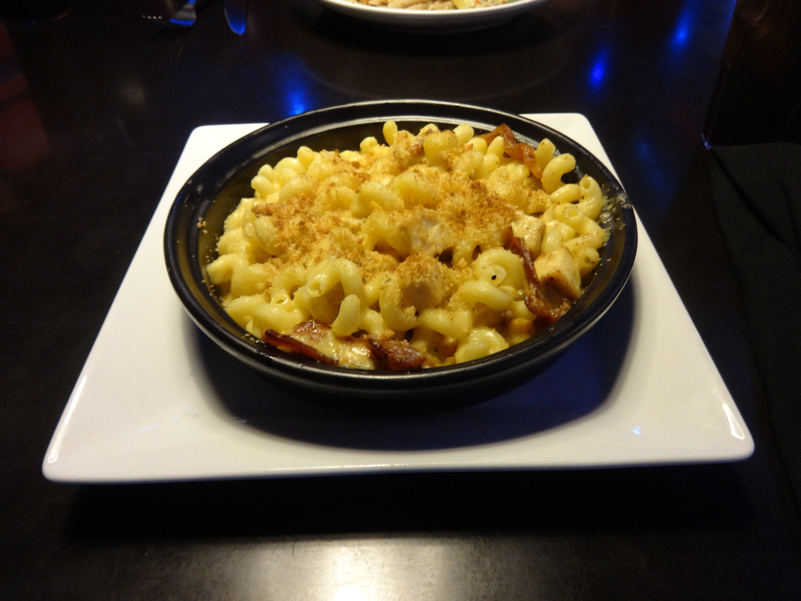

Mac and cheese

Mac and cheese is a classic comfort dish made of tender elbow macaroni smothered in a rich, velvety cheese sauce. Typically crafted from a butter-and-flour roux whisked with milk and melted sharp cheddar, it is prized for its creamy, savory flavor and can be served straight from the stovetop or baked in the oven with a golden, crispy breadcrumb topping
Ingredients
- Elbow macaroni: 1 lb (450 g)
- All-purpose flour: 4 tablespoons (¼ cup)
- Unsalted butter: 4 tablespoons (½ stick)
- Whole milk: 3 cups
- Sharp cheddar cheese: 3 cups, freshly shredded (block cheese melts much smoother than pre-shredded)
- Gruyère, Monterey Jack, or Parmesan cheese: 1 cup, shredded (adds extra depth and creamines)
- Seasonings: 1 teaspoon salt, ½ teaspoon black pepper, ½ teaspoon mustard powder or garlic powder (optional, enhances the cheese flavor)
- Optional baked topping: ½ cup panko breadcrumbs tossed with 1 tablespoon melted butter
Steps
- Boil the pasta: Cook the elbow macaroni in a large pot of salted boiling water according to package directions until just al dente (about 7–8 minutes). Drain well and set aside.
- Make the roux: In the same pot (or a large saucepan) over medium heat, melt the butter. Whisk in the flour and cook, stirring constantly, for 1 to 2 minutes until bubbly and lightly golden (this removes the raw flour taste).
- Create the creamy base: Slowly pour in the milk while whisking continuously to prevent lumps. Bring the mixture to a gentle simmer and cook for 3 to 5 minutes, whisking often, until the sauce thickens enough to coat the back of a spoon.
- Melt the cheese: Remove the pot from the heat. Stir in the salt, black pepper, and optional mustard or garlic powder, then gradually add the shredded cheddar and secondary cheese a handful at a time, stirring until completely melted and velvety smooth.
- Combine and serve (or bake): Fold the cooked macaroni into the cheese sauce until every noodle is evenly coated. Serve immediately for creamy stovetop mac and cheese—or transfer to a greased baking dish, top with buttered panko breadcrumbs, and bake at 375°F (190°C) for 15–20 minutes until bubbling and golden-brown on top.
Home